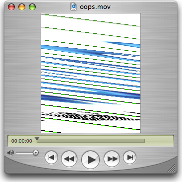

Q: Is it possible to provide data other than k32ARGBPixelFormat in the MovieExportGetDataProc? Attempting to provide k2vuyPixelFormat pixels from a PixMap doesn't seem to work.A: Yes, supplying k2vuyPixelFormat pixels is perfectly fine. When doing so, care must be taken to ensure the ImageDescription being returned as part of the MovieExportGetDataParams structure is correct. This is no different than if you were providing k32ARGBPixelFormat pixel data. If for example the data is coming from a k2vuyPixelFormat GWorld created with QTNewGWorld, an ImageDescription for the PixMap can be created by calling MakeImageDescriptionForPixMap. In some versions of QuickTime 7 however, MakeImageDescriptionForPixMap fails to add the 'rowb' (kICMImageDescriptionPropertyID_RowBytes) image description extension. Incorrect or missing RowBytes information for the source data will produce unexpected results. See Figure 1. Figure 1: That's not what I wanted!  To work around this, first calculate or retrieve the correct RowBytes value then call ICMImageDescriptionSetProperty using the kICMImageDescriptionPropertyID_RowBytes property ID to add the RowBytes value to the ImageDescription. See Listing 1. Listing 1: Adding the kICMImageDescriptionPropertyID_RowBytes property.
ImageDescriptionHandle MyMakeImageDescriptionForPixMap(PixMapHandle inPixMapH)
{
ImageDescriptionHandle idh = NULL;
OSErr err;
if (NULL == inPixMapH) return NULL;
err = MakeImageDescriptionForPixMap(inPixMapH, &idh);
if (noErr == err) {
// add it
SInt32 rowBytes = QTGetPixMapHandleRowBytes(inPixMapH);
ICMImageDescriptionSetProperty(idh,
kQTPropertyClass_ImageDescription,
kICMImageDescriptionPropertyID_RowBytes,
sizeof(rowBytes), &rowBytes);
}
return idh;
}
Document Revision History| Date | Notes |
|---|
| 2006-03-03 | Discusses adding the missing 'rowb' ImageDescription extension when using MakeImageDescriptionFromPixMap with a k2vuyPixelFormat GWorld for a procedures export. |
Posted: 2006-03-03
|